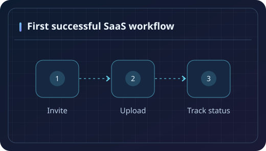
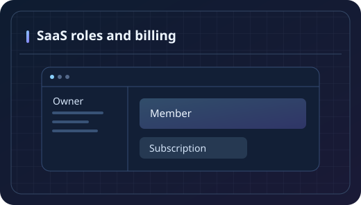
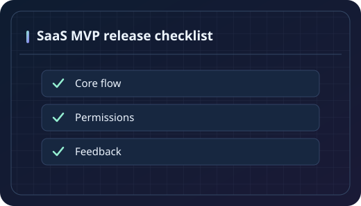

SaaS Product Development
Start with the workflow customers need most. Scope a SaaS MVP around it, then decide how accounts, permissions and billing should work.
Start with one customer workflow
Describe what a customer needs to do from sign-up to first useful result. In an invoicing tool, that might be creating a client and sending an invoice. Make that flow easy to test before expanding the roadmap.
Map data, permissions and billing
Agree who can view or change each type of data. If several businesses will use the product, plan how their data stays separate. Add subscription rules once you know how customers will use the service.
Prepare the MVP for feedback
Agree on an acceptance test for the core flow and identify who will try it. Keep a separate list for operations features that can be handled manually or added later through business automation.
What to define before development
- First successful task
- Write the sequence a new user follows before they get a useful result.
- Access and data
- List user roles and what each role can see or change.
- MVP review
- Identify who will test the product and what feedback would justify expanding the scope.
Turn the idea into an acceptance test
Describe the first success from a customer’s point of view. For a client portal, that could be accepting an invite, uploading a document and seeing its status. List what happens when something goes wrong, such as a file being too large or a user trying to view another company’s request.
Use that example to agree on the screens, data fields and actions needed for the first release. Add reporting, optional integrations and secondary workflows to a later list so you can review the core experience first.

Agree on account and billing behavior
Write down who can invite users, approve changes and see private data. A solo account behaves differently from a product used by teams. If your business plans subscriptions, define what happens when someone changes plan, cancels or loses access to a paid feature.
Scope admin tools around real support tasks like resending an invite or checking why a workflow stopped. Tasks that belong outside the product may be handled with a separate automation workflow once the manual steps are understood.

What we review before a release
Use sample accounts to test the first useful action, the common errors and the boundaries between roles. Plan how early users will send feedback and how the team will decide what to change first.
The quote depends on workflows, integrations, number of roles, data migration and the required handover. Our project process shows where design and build reviews fit.

FAQ
What should I bring to the first conversation?
Share the target users, the job they need to complete and how they handle it today. A sketch or a short description is enough to begin.
Can subscriptions be added after the first release?
Yes, depending on scope. Discuss the intended pricing model early so accounts and permissions can support it.